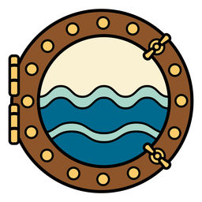

<mat-toolbar color="primary" fxLayout="row" fxLayoutAlign="space-between center">
    <div id="title" fxLayoutAlign="center center" fxLayoutGap="1rem">
        
        <h1> SHIP BOOK </h1>
    </div>

    <div id="links" fxLayoutAlign="space-around start">
        <a mat-icon-button routerLinkActive="active" routerLink="/ships">
          <mat-icon matTooltip="View the list of all ships"> list </mat-icon>
          All ships
        </a>
        <a mat-icon-button routerLinkActive="active" routerLink="/create">
          <mat-icon matTooltip="Add a new ship"> library_add </mat-icon>
          Add new
        </a>
    </div>
</mat-toolbar>

<router-outlet></router-outlet>
